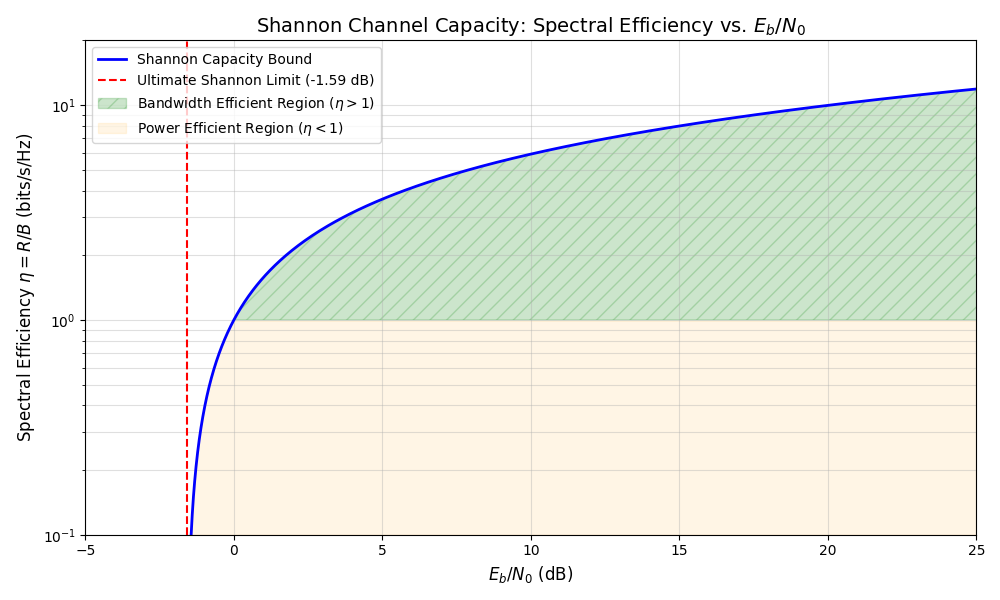

Breaking the Speed Limit: Improved Receivers for FTN Signaling
The Push for Bandwidth Efficiency
In his groundbreaking work, Claude Shannon proved that there exists a code capable of achieving the Shannon capacity bound. Historically, most coding research focused on the power-efficient region of these rates. However, modern communication demands have shifted the spotlight toward the bandwidth-efficient region. The Shannon-Hartley theorem relates the capacity of a channel to its bandwidth and signal-to-noise ratio. When expressed in terms of energy per bit ($E_b/N_0$) and spectral efficiency ($\eta = R/B$), the relationship is defined by:
$$\frac{E_b}{N_0} = \frac{2^\eta - 1}{\eta}$$
To maximize throughput within limited frequency bands, we often deliberately introduce Intersymbol Interference (ISI) into the transmitted signal. This technique is commonly referred to as Partial Response Signaling (PRS) or Faster-than-Nyquist (FTN) signaling.
While FTN allows us to pack more data into the same spectrum, it creates a massive challenge at the receiver: the signal must be painstakingly untangled through equalization.
The Equalization Bottleneck
Equalization is an essential component of every terrestrial transceiver. While linear equalizers are common, their performance is notoriously sensitive to the channel's impulse response. To achieve reliable communication in FTN systems, Maximum Likelihood (ML) or Maximum A Posteriori (MAP) trellis decoding is almost always inevitable.
The Complexity Crisis
Although trellis decoding algorithms are theoretically optimal, they face two major hurdles:
- Computational Complexity: The number of states grows exponentially with the length of the channel memory.
- Memory Requirements: Storing metrics for iterative structures (like Turbo-based systems) can be prohibitive.
This becomes especially restrictive in modern bandwidth-constrained coded modulation systems. These systems often suffer from long impulse responses and are highly sensitive to truncation, making a standard full-complexity decoder practically impossible to implement.
A New Path: Heuristic Complexity Reduction
A full-complexity trellis decoder performs an exhaustive search of the state space. However, we can use heuristic approaches to prune this search space without significantly sacrificing performance. Interestingly, certain reduced-complexity algorithms have been shown to actually outperform optimal decoders under specific channel conditions, likely due to their robustness against error propagation in non-ideal scenarios.
Proposed Solution
In my research I proposed a combination of reduced-complexity schemes. This hybrid approach aims to:
- Drastically reduce the computational footprint of the receiver.
- Maintain (or exceed) the performance of optimal decoders under specific operational conditions.
- Enable the practical use of FTN signaling in real-world, hardware-constrained transceivers.
By optimizing how we navigate the trellis, we can finally bridge the gap between Shannon’s theoretical bandwidth efficiency and practical real-time implementation.
This article's core concepts and structure are my own; the prose was polished and corrected with the help of an LLM.